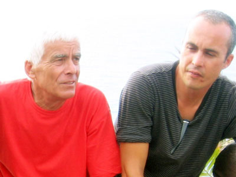
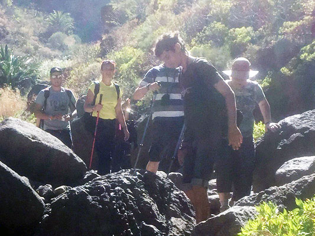

Medaillenträger seit 2008, für den Tourismus auf Teneriffa! Als erster hat er auch, vor 35 Jahren, die alten Verbindungs - Strecken im Teno Massiv und den Anaga Bergen, wieder entdeckt, nachdem sie von Lavamassen verschüttet waren. Mit dem populären Komentar: "siganme…. vamos!" drückte er den verblüfften Touristen die Machete in die Hand und schon wurden die Wege frei geschlagen. Und bis heute ist das sein Leitspruch geblieben: siganme….vamos! alles mir nach. Sein breitgefächertes Wissen und seine Erfahrungen, werden von Touristen, wie auch voller Respekt, von der Regierung beansprucht.

Victor
unser Outdoor - Crack, ist in den Pyrenäen, bei der berühmten Bergsportschule CETDAM (centro especializado en tecnificación deportiva de alta montaña), ausgebildet und ist der absolute Teide Freak. Seine Wanderführung ist umsichtig und voller genialer Ideen, das Wissen über die Insel enorm und reicht von den Ureinwohnern bis zu geologischen Besonderheiten (die alle in Buchform, kilolweise seinen Rucksack füllen, und nicht etwa, wie man glauben könnte: Notfallapotheke, Streckverbaende, Kompressen, Pflaster). Er kann die Insel mit geschlossenen Augen durchlaufen, er schafft die Masca-Schlucht in 44 Minuten, von unten nach oben und mindestens 4 Autounfälle pro Jahr...

Albi
das gute Herz für alle Fälle, kümmert sich um alles rund um die Wanderungen; Organisation bis ins Detail mit weisester Vorraussicht; kennt hier auch den kleinsten Berg und grössten Stein. Ein charmant- verträumter Wanderführer; macht insgeheim die verwegensten Abstiege von hochbrisanten Küstenabschnitten. Hofft aber ständig, dass nicht soviele Gäste kommen, sodass er Sonne und Strand ausgiebig „untersuchen„ kann.